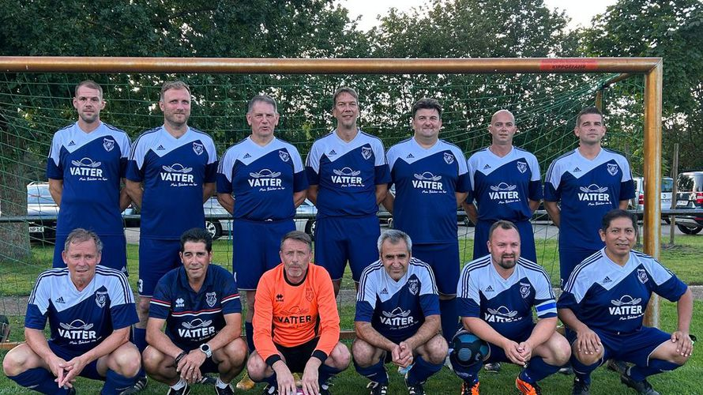

Herren Ü40 | Niedersachsen
SG Lindwedel-Hope/Esperke/Niedernstöcken
Mannschaftsverantwortliche
| Trainer | ... | Tel.: ... |
| 1. Betreuer | ... | Tel.: ... |
Trainingszeiten
| Montag & Mittwoch - 18:30 bis 20:00 Uhr |
| Sportplatz SV Esperke |
Spielplan & Ergebnisse
Alle Spiele und Ergebnisse auf fussball.de ansehen